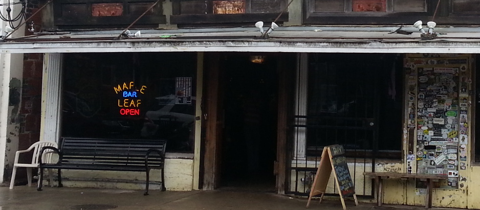

The afternoon before I leave New Orleans, I arrive at the Maple Leaf minutes after three, the start time of Nancy Harris's Sunday readings, but there's no sign of poetry. For the moment the poets have joined the football fans. The Saints are playing the Giants in the Super Dome, it's All Saints Day, and the stars are aligned, as they often are for New Orleans, aiming towards something cosmic.
It's been raining all day, so the whole city and all it contains feels like a giant sponge that can hold no more water, but waits for some momentous squeeze to release the deluge.
My own interest in football lies mostly dormant, subdued by years of hype and boredom. Beautiful bartender Ragan serves me a drink, and I carry it outside to escape the din, and stand on the curb in front of the Leaf to look up and down this iconic New Orleans street in relative silence. Oak Street ends six blocks away in the restful, damp green of the Mississippi River levee. In the other direction and a little closer, a Carrolton Avenue street car passes, clicking quietly along the tracks with occasional sparks from the wires overhead. The peaceful street and the cacophony of the bar make a magnetic field whose poles pull my random thoughts into alignment, pushing me towards the philosophical.
Back inside the crowd is subdued. The Saints trail badly, have lost possession, and only minutes remain. I make my way through the crowd to the back room, where on football Sundays Hank feeds his hungry horde of fans and poets. The pool table is covered over with plywood and set out with trays of food: fried fish, dirty rice, Cajun pasta, carrot and slaw salad, green pods of new peas, heavily frosted spice cake.
On the back patio, where, on drier days, people read poetry, the rain has stopped. But chairs, tables, and benches are puddled. Rain water drips steadily from tree branches drooping heavily over wrought iron and brick.
I return to the bar and witness a football miracle in progress. Impossibly behind and with no time remaining, the Saints win anyway, and the city sighs in relief. Even before the crowd subsides and the reading can begin, at the Maple Leaf it's been a day of poetry.
